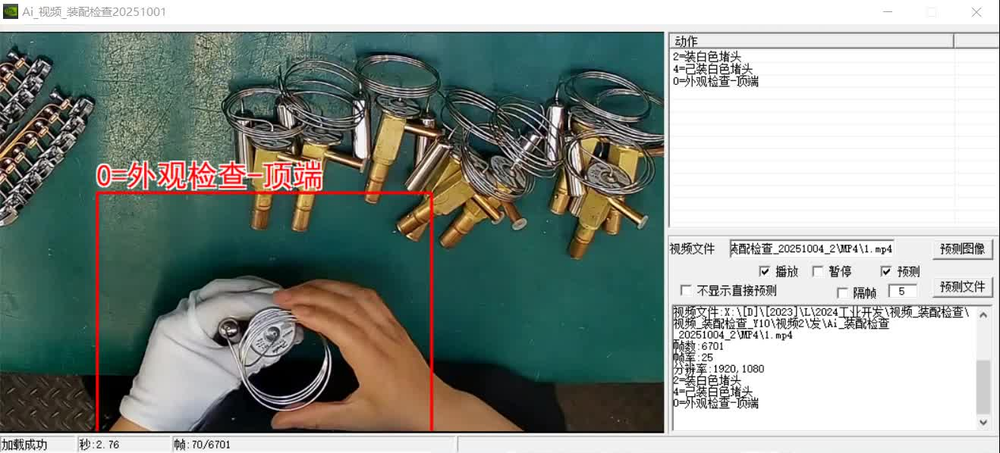
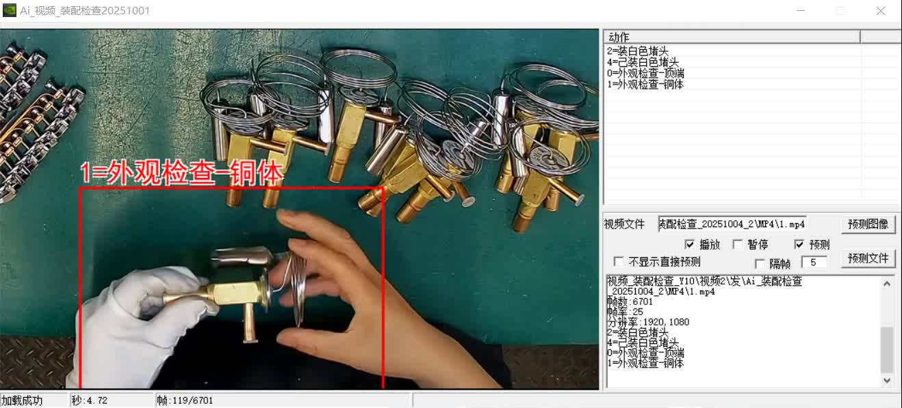
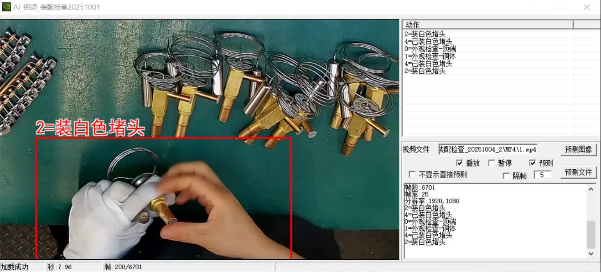
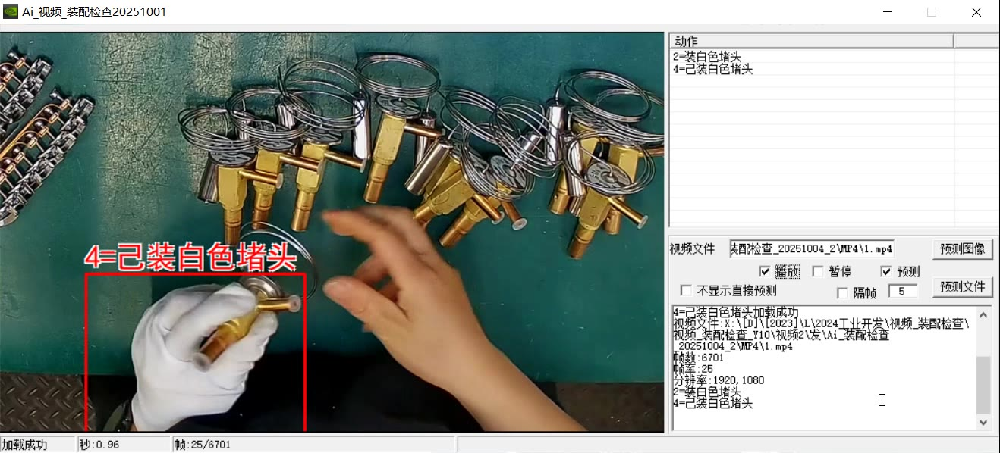

Original work · NING YI AI · Assembly Verification System YOLOv26n
In one line
The evolution of assembly QC is not how fast a model runs — it is moving from "detecting an action" to "maintaining an assembly-process state"
Anyone who has worked on assembly inspection knows this stage: take a YOLO model, train it, deploy it, the boxes come out, the actions are recognised, the task is done.
But on projects such as surface inspection, plug assembly or instruction-sheet placement — where the system has to continuously judge whether a process step is actually complete — you find that one action detection box is no longer enough.
The centre of gravity of assembly QC is shifting from "how many action classes can this model recognise" to "can the system continuously maintain a consistent, sufficiently current assembly-process state". YOLO still matters — but it should not single-handedly carry surface verdicts, assembly actions, completion checks and quality traceability.
This is not YOLO failing. On the contrary — YOLO, and YOLOv26n in particular, remains one of the most effective tools for industrial on-device assembly detection. But once the task changes from "what is this station doing right now" to "how many process steps has this unit completed, is the plug seated, is the copper body acceptable, and is every step traceable", a single detection box can no longer support the quality decision behind it.
In 2026, assembly QC is going through a paradigm shift from "running a model" to "maintaining a state". Behind that shift, detection, temporal logic and process traceability start cooperating — and the YOLOv26n roadmap happens to provide the technical foundation for it.
For a long time the core task of assembly QC was defined as "recognising the assembly action in the image".
YOLO answers two questions: what assembly action is happening, and roughly where. For a fixed station, a fixed process step and a fixed camera, that used to be sufficient.
Today's high-end assembly QC, however, is a continuous quality-control task. After recognising "the white plug is being inserted", the system still has to know: has this unit passed its surface checks, did the plug end up fully seated, has the full sequence "top check → copper-body check → plug insertion → completion verify" been completed, and does every verdict carry a timestamp that can be traced back.
These questions require process-sequence information, state-confirmation information and process-traceability information.
Take plug assembly: a single detection model can output an "inserting plug" action box, but what the system needs to maintain is not an action box — it is an assembly-step state record: step ID, action class, confidence, verdict timestamp, completion-check status. It can be updated on every line cycle and passed between stations. That state is what a quality engineer and an MES can actually consume.
class AssemblyStep:
"""One assembly-step state record — unified output after per-frame inference"""
def __init__(self, step_id, category, bbox, confidence):
self.step_id = step_id # process step index
self.category = category # YOLO detection class
self.bbox_2d = bbox # action / object box
self.confidence = confidence # detection confidence
self.timestamp = now() # verdict timestamp for this step
self.verified = False # completion check passed?
class AssemblyState:
"""Assembly-process state — one consistent, traceable state per unit"""
def __init__(self, product_id):
self.product_id = product_id
self.steps = {} # step_id -> AssemblyStep
self.pass_fail = "IN_PROGRESS" # overall verdict for the unit
Multi-class detection in assembly QC is not about placing five detection results side by side — it lets different classes answer different questions.
In this scenario the model outputs 5 classes for a single station view, covering three stages: inspect — assemble — confirm.
| ID | Class | Stage | Question it answers |
|---|---|---|---|
| 0 | Visual check — top | Inspect | Is the top surface of the part acceptable? |
| 1 | Visual check — copper body | Inspect | Is the copper body acceptable? |
| 2 | Installing white plug | Assemble | The plug-insertion action is taking place |
| 3 | Placing instruction sheet | Assemble | The instruction sheet is being placed |
| 4 | White plug seated | Confirm | The plug is fully seated — completion verified |
Note that these five are not a flat list: 0 and 1 are surface checks (may this part be assembled), 2 is the assembly action (currently assembling), 4 is the completion check (passed or not). Only together do they close the process loop.
class AssemblyPipeline:
"""Assembly inspection pipeline — let each class answer a different question"""
def __init__(self):
self.detector = YOLO("yolo26n.pt") # detect: what is happening
def process_frame(self, frame, product_id):
dets = self.detector(frame, conf=0.25)
for det in dets:
step = AssemblyStep(det.cls, det.bbox, det.conf)
state.steps[step.step_id] = step
if det.cls == 4: # completion check
step.verified = True
return self._build_state(product_id)
The frames below are captured from a live screen recording on the production station (not renderings), showing the real-time verdict at each stage: inspect — assemble — confirm.

Class 0 · top surface condition

Class 1 · copper body condition

Class 2 · plug-insertion action in progress

Class 4 · plug fully seated, completion verified
Note: class 3 (instruction sheet) was not triggered in this recording — it is an optional station, so no frame is attached.
There is no need to process every action at the same frequency.
Surface checks (0/1) run frame by frame to keep up with the line takt; the assembly action (2) is recognised continuously inside the action window; the completion check (4) acts as the confirmation signal that advances the state machine.
In the actual detection sequence the model emits verdicts at one station in process order. The typical rhythm is:
That is: the top and copper-body surface checks complete first, then the plug-assembly stage begins, and "white plug seated" closes the step as the completion confirmation signal. Multiple cycles show this logic reproduces stably under a continuous line takt, so it can serve as an automatic criterion for process completion.
class AssemblyStateMachine:
"""Assembly state machine — advance the process state on detection order"""
def __init__(self):
self.sequence = [0, 1, 2, 4] # top check -> copper body -> plug -> complete
self.cursor = 0
def on_detect(self, cls):
if cls == self.sequence[self.cursor]:
self.cursor += 1
if cls == 4 and self.cursor >= len(self.sequence):
return "PASS" # full process passed
return "IN_PROGRESS"
As the number of models grows, the bottleneck easily moves from raw compute to the data path and latency variance. This is exactly where YOLOv26n wins in industrial assembly QC — end-to-end NMS-free inference and the removal of the DFL module make the model export cleaner, with one-click export to ONNX / TensorRT and similar platforms.
In assembly QC, whether each action verdict is stable maps directly onto the line's escape rate — a plug that was not seated and was not caught flows on to the next step.
Key properties of YOLOv26n: a default one-to-one detection head, image in → result out, with NMS post-processing removed from the inference path; a fixed-shape output tensor (N, 300, 6) that downstream code can consume directly; and inference time no longer fluctuating with object density or scene complexity — for QC that gates a line takt, "does not fluctuate" matters far more than "occasionally faster".
This explains a key trend in industrial QC: it is not how fast the model runs, but whether the system can keep emitting consistent, deterministic verdicts. Detection supplies speed and determinism; only then can state maintenance and traceability be built on top.
A single frame will fail under edge conditions. When a detection score is middling, and the step is consistent with the actions before and after it in time, the state machine advances smoothly and historical records of the same step in earlier batches agree — the system's trust in that verdict can rise. Conversely, if the action jumps, the order is scrambled or the trajectory cannot be associated, confidence should be lowered or the observation repeated.
This is not averaging a few confidences. It has to consider temporal consistency, state continuity and process traceability at the same time.
In assembly QC, if a step appears repeatedly and consistently across many units, the system can conclude "this assembly action is stable"; if an action is missing on a unit or its check fails, that unit is flagged as an exception. Every verdict should carry a timestamp — never maintain the state of frame 98 with a detection from frame 100.
class AssemblyFusionEngine:
"""Assembly state fusion — validate consistency instead of averaging"""
def fuse(self, state, frame_id):
# condition 1: temporal consistency — steps advance in order
if state.sequence_ok():
conf_bonus = 1.1
# condition 2: state continuity — completion check after the action
if state.verified and state.last_action == 2:
conf_bonus *= 1.2
# timestamp consistency — all verdicts belong to the same unit
assert state.timestamp == current_product.timestamp
return min(conf_bonus, 1.0)
In 2026 the assembly QC system is moving from a single detection model to a state-maintenance architecture.
YOLO remains the core of assembly detection, but it is turning from "the only model" into "one member of a state system". The future assembly QC system is not defined by how many action classes a model recognises, but by detection, temporal logic and process traceability cooperating to maintain one consistent assembly-process state.
The end state: a state machine maintaining a unified assembly state — surface checks (0/1) decide whether assembly may proceed; the assembly action (2) is recognised frame by frame while it happens; the completion check (4) confirms seating and drives the state machine; and process traceability writes every timestamped verdict to the database so it can be replayed.
The real evolution of on-device vision is not from "one model" to "many models" — it is from "a single inference" to "continuously maintaining a process state".
The approach most worth avoiding is stacking detection boxes together, running them all at the same frequency, and then waiting for a set of mutually inconsistent results. The more reliable architecture is: the detection model maintains the base state at high frequency, the process state machine advances at takt, every verdict carries a timestamp, and the output is one consistent, real-time, inspectable assembly-process state.
In assembly QC, the real challenge is not making one model stronger — it is letting multiple classes do their own jobs and work together.